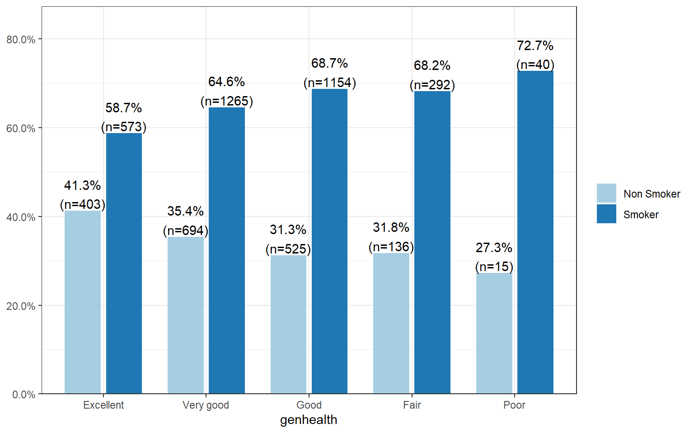

5.5 (C~C) Multiple Proportions: \(\chi^{2}\)
Recall that the point estimates for the proportion of an event occurring is \(\frac{x}{n}\), where \(x\) is the number of times the event occurs out of \(n\) records. In this section we we would like to make conclusions about the difference in two population proportions: \(p_1 - p_2\). In other words we’re testing the hypothesis that \(p_{1}-p_{2}=0\).
Our estimate for the difference in proportions based on the sample is \(\hat{p}_1 - \hat{p}_2\). No surprise there. What is slightly different is that we use a pooled proportion to check the condition of normality, and to calculate the standard error of the estimate. This pooled proportion is calculated by pooling the number of events in both groups, divided by the effective sample size for those groups.
\[ \hat{p} = \frac{x_{1} + x_{2}}{n_{1}+n_{2}} \]
Then the standard error of the point estimate is calculated as
\[ \sqrt{\frac{\hat{p}(1-\hat{p})}{n_1} + \frac{\hat{p}(1-\hat{p})}{n_2}} \]
So the equations for the Confidence Interval for the difference in proportions is,
\[ \left( \hat{p}_{1} - \hat{p}_{2} \right) \pm t_{\frac{\alpha}{2}, df} \sqrt{\frac{\hat{p}(1-\hat{p})}{n_1} + \frac{\hat{p}(1-\hat{p})}{n_2}} \]
with test statistic, \[ t^{*} = \frac{\left( \hat{p}_{1} - \hat{p}_{2} \right) - d_{0}} {\left( \sqrt{\frac{\hat{p}(1-\hat{p})}{n_1} + \frac{\hat{p}(1-\hat{p})}{n_2}} \right )} \]
5.5.1 Conditions for the sampling distribution to be normal.
The difference \(\hat{p}_1 - \hat{p}_2\) tends to follow a normal model when 1) each proportion separately follows a normal model, and 2) the two samples are independent of each other. #1 can be verified by checking the success-failure condition for each group.
That means:
- \(\hat{p}n_{1} \geq 10\), AND
- \(\hat{p}n_{2} \geq 10\), AND
- \(\hat{q}n_{1} \geq 10\), AND
- \(\hat{q}n_{1} \geq 10\).
Where, if I’ve forgotten to mention it yet, \(q = 1-p\).
When sample sizes are below 10, but still not super small, say like 5, we turn to the non-parameteric version of this test called a Fisher’s Exact Test.
5.5.2 Example: Are Mammograms effective?
This example comes from the OpenIntro Statistics textbook (3rd ed).
A 30-year study was conducted with nearly 90,000 female participants. (Miller AB. 2014) During a 5-year screening period, each woman was randomized to one of two groups: in the first group, women received regular mammograms to screen for breast cancer, and in the second group, women received regular non-mammogram breast cancer exams. No intervention was made during the following 25 years of the study, and we’ll consider death resulting from breast cancer over the full 30-year period. Results from the study are summarized in the following table.
| Alive | Dead | Sum | |
|---|---|---|---|
| Control | 44405 | 505 | 44910 |
| Mammogram | 44425 | 500 | 44925 |
| Sum | 88830 | 1005 | 89835 |
The independent/explanatory variable is treatment (additional mammograms), and the dependent/response variable is death from breast cancer. Are these measures associated?
If mammograms are much more effective than non-mammogram breast cancer exams, then we would expect to see additional deaths from breast cancer in the control group (there is a relationship). On the other hand, if mammograms are not as effective as regular breast cancer exams, we would expect to see no difference in breast cancer deaths in the two groups (there is no relationship).
What we need to do is to figure out how many deaths would be expected, if there was no relationship between treatment death by breast cancer, and then examine the residuals - the difference between the observed (\(O_{ij}\)) and expected (\(E_{ij}\)).
In our DATA = MODEL + RESIDUAL framework, the DATA is the observed counts \(O_{ij}\), and the MODEL is the expected counts \(E_{ij}\).
To see how the expected counts are calculated, we need to define a few more symbols, so we can find our way around the cells of a table. Just like rows and columns in a matrix, rows are indexed first (as \(i\) and columns indexed as \(j\)). So the cell in the top left is \(i=1\) and \(j=1\).
| \(O_{ij}\) | Alive | Dead | Total |
|---|---|---|---|
| Mammo | \(n_{11}\) | \(n_{12}\) | \(n_{1.}\) |
| Control | \(n_{21}\) | \(n_{22}\) | \(n_{2.}\) |
| Total | \(n_{.1}\) | \(n_{.2}\) | \(N\) |
The expected count for each cell is calculated as the row total times the column total for that cell, divided by the overall total. Yes this will end up as a fraction.
\[E_{ij} = \frac{n_{i.}n_{.j}}{N}\]
| Alive | Dead | |
|---|---|---|
| Control | 44407.58 | 502.4161 |
| Mammogram | 44422.42 | 502.5839 |
The residuals are calculated as \[ RESIDUALS = (O_{ij} - E_{ij})\]
| Alive | Dead | |
|---|---|---|
| Control | -0.0122616 | 0.1152775 |
| Mammogram | 0.0122596 | -0.1152583 |
Examining the residuals can tell us which combinations had counts more or less observations than expected. If mammograms were not associated with survival, there were 0.01 fewer people still alive than expected, and 0.11 more people dead. This is trivially small (2 x 2) example with very large sample sizes. There will be another example provided later.
The \(\chi^2\) test statistic is defined as the sum of the squared residuals, divided by the expected counts, and follows a \(\chi^2\) distribution with degrees of freedom (#rows -1)(#cols -1).
\[ \sum_{ij}\frac{(O_{ij}-E_{ij})^{2}}{E_{ij}} \]
Like every other statistical test, large values of test statistics correspond to low p-values.
Below is a picture of the distribution for the current example. The p-value is reported on the left (vertically), the purple shaded area denotes the rejection region if we were using a hard cutoff of 0.05. (The rejection region is the area where the test statistic had to be at for a p-value to be smaller than .05.). For this example the test statistic was 0.017, which corresponds to a p-value of 0.895. Thus, this study does not provide enough evidence to support the claim that mammograms decrease the rate of deaths by breast cancer.

5.5.3 Example: Smoking and General Health
More often than not, we will have the full data available. That is, data at each individual record not just a summary table like in the previous example. Let’s work through an example.
Using the Addhealth data set, what can we say about the relationship between smoking and a person’s perceived general level of general health?
1. Identify response and explanatory variables.
- The binary explanatory variable is whether the person has ever smoked an entire cigarette (
eversmoke_c) - The categorical explanatory variable is the person’s general health (
genhealth) and has levels “Excellent”, “Very Good”, “Good”, “Fair”, and “Poor”.
2. Visualize and summarise bivariate relationship.
sjPlot::plot_xtab(grp=addhealth$eversmoke_c, x=addhealth$genhealth,
show.total = FALSE, margin="row", legend.title="") 
The percentage of smokers seems to increase as the general health status decreases. Almost three-quarters (73%, n=40) of those reporting poor health have smoked an entire cigarette at least once in their life compared to 59% (n=573) of those reporting excellent health.
3. Write the relationship you want to examine in the form of a research question.
Is the proportion of those who have ever smoked equal across all levels of general health?
- Null Hypothesis: The proportion of smokers in each general health category is the same.
- Alternate Hypothesis: At least one proportion is different.
4. Perform an appropriate statistical analysis.
I. Define the parameters under consideration.
- Let \(p_{1}\) be the true proportion of smokers within the ``Excellent" health category.
- Let \(p_{2}\) be the true proportion of smokers within the ``Very good" health category.
- Let \(p_{3}\) be the true proportion of smokers within ``Good" health category.
- Let \(p_{4}\) be the true proportion of smokers within ``Fair" health category.
- Let \(p_{5}\) be the true proportion of smokers within ``Poor" health category.
\(H_{0}: p_{1} = p_{2} = p_{3} = p_{4} = p_{5}\)
\(H_{A}:\) At least one proportion is different.I will conduct a \(\chi\)-squared test of association. There is at least 10 observations in each combination of smoking status and general health.
Conduct the test.
health.smoke.model <- chisq.test(addhealth$genhealth, addhealth$eversmoke_c)
health.smoke.model
##
## Pearson's Chi-squared test
##
## data: addhealth$genhealth and addhealth$eversmoke_c
## X-squared = 30.795, df = 4, p-value = 3.371e-06We have strong evidence against the null; the \(p\)-value is less than .0001.
5. Write a conclusion in context of the problem. We can conclude that there is an association between ever smoking a cigarette in their life and perceived general health (\(\chi^2\) = 30.8, df=4, \(p<.0001\)).
5.5.4 Multiple Comparisons
Just like with ANOVA, if we find that the chi-squared test indicates that at least one proportion is different from the others, it’s our job to figure out which ones might be different! We will analyze the residuals to accomplish this. Not by hand! Never again! You’re not learning how to code for nothing.
The residuals are automatically stored in the model output. You can either print them out and look at the values directly:
health.smoke.model$residuals
## addhealth$eversmoke_c
## addhealth$genhealth Non Smoker Smoker
## Excellent 3.4461139 -2.5168277
## Very good 0.4810893 -0.3513578
## Good -2.4431255 1.7843072
## Fair -1.0556365 0.7709714
## Poor -0.9446378 0.6899048Or you can extract them and save them as a data frame. Then use ggplot with geom_raster to fill in your squares.
plot.residuals <- health.smoke.model$residuals %>% data.frame()
ggplot(plot.residuals, aes(x=addhealth.genhealth, y=addhealth.eversmoke_c)) +
geom_raster(aes(fill=Freq)) + scale_fill_viridis_c()
The proportion of those who have never smoked and report being in Excellent health is higher than expected if these two measures were independent (high positive residual means observed is greater than expected). A lower percent of people reporting Good health never smoked, which is lower than expected if smoking and health status were independent. So these two categories are likely to be the groups that have a different proportion of lifetime smoker \(p_{i}\) compared to the other groups.